[1] 0.29071Avaliação em Massa de Imóveis
Luiz F. P. Droubi
Universidade Federal de Santa Catarina
5 de maio de 2026
Probabilidade
Definição clássica de probabilidade
- Definição clássica de Laplace:
- É a razão entre a chance (\(f\)) que um evento (\(A\)) ocorra e a soma das chances de todos os eventos possíveis (\(N\)):
- \[\mathbb P(A) = \frac{f}{N}\]
- É a razão entre a chance (\(f\)) que um evento (\(A\)) ocorra e a soma das chances de todos os eventos possíveis (\(N\)):
- Exemplo:
- Ao lançar um dado, a probabilidade de obtenção de um número dentro do conjunto \(\{ 1, 2 ,3, 4, 5, 6\}\) é:
- \[\mathbb P(A) = \frac{1}{6}\]
- Ao lançar um dado, a probabilidade de obtenção de um número dentro do conjunto \(\{ 1, 2 ,3, 4, 5, 6\}\) é:
- Problema: define probabilidade como a “chance” que o evento ocorra.
- A cobra come o rabo!
Escola axiomática
- Kolmogorov (1950):
- Definiu axiomas a partir dos quais é possível desenvolver a Probabilidade como uma ciência rigorosa.
- Espaço Amostral (\(S\))
- \(\mathbb P(S) = 1\)
- Se dois eventos \(A\) e \(B\) são mutuamente exclusivos, então:
- \(\mathbb P(A + B) = \mathbb P(A) + \mathbb P(B)\)
- Definiu axiomas a partir dos quais é possível desenvolver a Probabilidade como uma ciência rigorosa.
- Na escola axiomática, os eventos são subconjuntos do espaço amostral
- Assim, é comum se referir aos eventos através da teoria dos conjuntos:
- \(\mathbb P (A \cup B) = \mathbb P(A) + \mathbb P(B)\)
- \(\mathbb P (A \cup B) = \mathbb P(A) + \mathbb P(B) - \mathbb P (A \cap B)\)
- Assim, é comum se referir aos eventos através da teoria dos conjuntos:
Escola Axiomática

Probabilidade Complementar
- \[\mathbb P(A') = 1 - \mathbb P(A)\]
- Por exemplo, se a probabilidade de um imóvel ser de Alto Padrão é de 25%
- Então a probabilidade de um imóvel não ser de Alto Padrão é de 75%!
- Por exemplo, se a probabilidade de um imóvel ser de Alto Padrão é de 25%
Probabilidade Condicional
- A Probabilidade Condicional de um evento é a probabilidade que um evento ocorra, dado que outro evento aconteceu
- É designada por \(\mathbb P(A|B)\)
- É definida como o quociente entre \(\mathbb P(A \cap B)\) e \(\mathbb P(B)\):
- \[\mathbb P(A|B) = \frac{\mathbb P(A \cap B)}{\mathbb P(B)}\, \text{se }\mathbb P(B) > 0 \tag{1}\]
Probabilidade Condicional
- Exemplo:
- Há 2.000 imóveis numa cidade
- 100 deles encontram-se no Centro
- \(\mathbb P(C) = 100/2.000 = 0,05\)
- 200 deles são de alto padrão
- \(\mathbb P(PC_A) = 200/2.000 = 0,10\)
- Destes 200, 80 encontram-se localizados no Centro
- \(\mathbb P(PC_A \cup C) = 80/2.000 = 0,04\)
- 100 deles encontram-se no Centro
- Dado que um imóvel situa-se no Centro
- Qual a probabilidade de que ele seja de alto padrão?
- \[\mathbb P(PC_A|C) = \frac{\mathbb P(PC_A \cap C)}{P_C}\]
- Qual a probabilidade de que ele seja de alto padrão?
- Há 2.000 imóveis numa cidade
Probabilidade Condicional
- Dado que um imóvel situa-se no Centro
- Qual a probabilidade de que ele seja de alto padrão?
- \[\mathbb P(PC_A|C) = \frac{\mathbb P(PC_A \cap C)}{P_C}\]
- \[\mathbb P(PC_A|C) = \frac{0,04}{0,05} = 80\%\]
- Qual a probabilidade de que ele seja de alto padrão?
Probabilidade Condicional
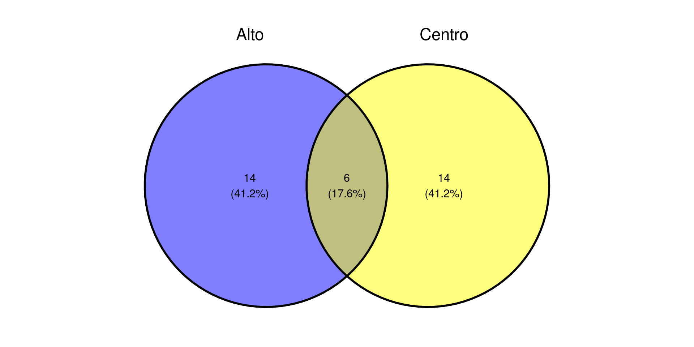
Probabilidade Condicional
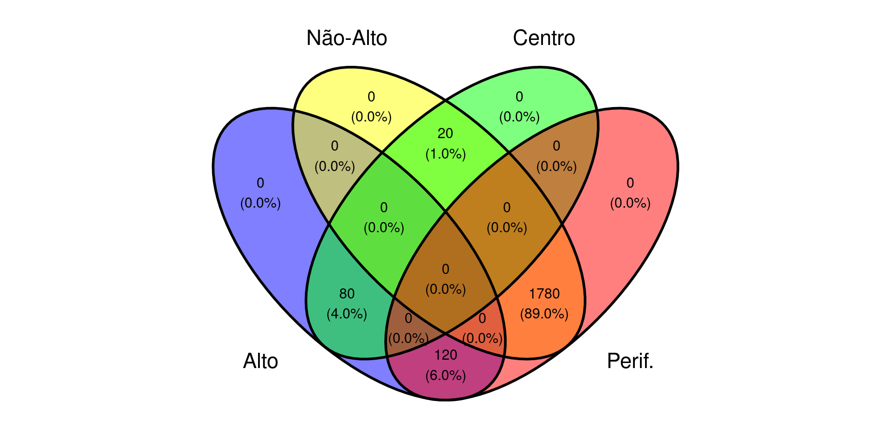
Teorema de Bayes
\[\mathbb P(A|B) = \frac{\mathbb P(A) \mathbb P(B|A)}{\mathbb P(B)}\]
Exemplo:
- \(\mathbb P(C|PC_A) = ?\)
- \[\mathbb P(C|PC_A) = \frac{\mathbb P(C)\mathbb P(PC_A|C)}{\mathbb P(PC_A)}\]
- \[\mathbb P(C|PC_A) = \frac{0,05\cdot0,80}{0,10}\]
- \[\mathbb P(C|PC_A) = 40\%\]
Teorema da Multiplicação
- Se dois eventos são mutuamente independentes, então:
- \[\mathbb P (A\cdot B) = \mathbb P(A) \mathbb P(B)\]
- Caso contrário:
- \[\mathbb P (A\cdot B) = \mathbb P(A) \mathbb P(B|A)\]
Variável Aleatória
Um termo um tanto confuso
- Seria mais apropriado função aleatória (Feller 1968, 12)
Variávies Aleatórias na verdade são funções definidas em um espaço amostral!
Informalmente, no entanto, definiremos variável aleatória como o:
- “Resultado numérico de um experimento” (Matloff 2009, 39).
- Por exemplo, ao lançar uma moeda diversas vezes, podemos definir:
- cara: 0
- coroa: 1
- Espaço Amostral: \(S = \{ 0, 1 \}\)
- Variável Aleatória: \(X = \{0, 0, 1, 1, 1, 1, 0, 0, 1, 0, 1, \ldots\}\)
Descrição de uma variável aleatória
Distribuições de Probabilidade
Existem diversas maneiras de descrever uma variável aleatória
A mais comum delas é definir as variáveis aleatórias através de sua função densidade de probabildidade (para as var. aleatórias contínuas) ou da sua função massa de probabilidade (para as var. aleatórias discretas)
- Por exemplo: ao jogar um dado, qual a probabilidade de obter o número 6?
- Distribuição de Bernoulli:
- \[\mathbb P(X = k) = p^k (1-p)^{1-k} \tag{2}\]
- \(k=0 \rightarrow \text{insucesso!}\)
- \(k=1 \rightarrow \text{sucesso}!\)
- \(S = \{1, 2, 3, 4, 5, 6\}\)
- \(\mathbb P(X = 1) = (1/6)^1 \cdot (1-1/6)^{1-1}\)
- \(\mathbb P(X = 1) = 1/6 \cdot 1 = 1/6\)
- \[\mathbb P(X = k) = p^k (1-p)^{1-k} \tag{2}\]
- Distribuição de Bernoulli:
- Por exemplo: ao jogar um dado, qual a probabilidade de obter o número 6?
Distribuição de Bernoulli
\[f(k,p) = \begin{cases} p & \text{ se } k = 1\\ q = 1 - p & \text{ se } k = 0 \end{cases}\]
Percebam:
- \[\sum_{i=1}^{k} f(k, p) = 1\]
- Toda função massa de probabilidade deve somar 1!
Distribuição Binomial
- A Distribuição Binomial é a generalização da Distribuição de Bernoulli para um número qualquer de tentativas
- \[\mathbb P(X = k) = \binom{n}{k} p^k (1-p)^{n-k} \tag{3}\]
- \(\binom{n}{k} = \frac{n!}{k!(n-k)!}\)
- Probabilidade de obter duas vezes o número 6 em 10 tentativas:
- \(\mathbb P(X = k) = \mathbb P(X = 2) = \binom{10}{2} (1/6)^2 (1-1/6)^{10-2}\)
- \(\mathbb P(X = 2) = 45 (1/6)^2 (5/6)^8 = 29,07\%\)
- Explicação: Existem 45 sequências possíveis de 10 lançamentos em que 2 vezes surgirão o número 6, com 1/6 de probabilidade, e oito vezes outros números, com 5/6 de probabilidade
Distribuição Binomial
\(\mathbb P(X = 2) = 45 (1/6)^2 (5/6)^8 = 29,07\%\)
No R:
Distribuição Binomial
- O experimento de obter um resultado específico no lançamento de um dado tem uma probabiliade relativamente baixa (\(p << 0,5\)).
- Por isso a distribuição é assimétrica!
- O experimento do lançamento de uma moeda apresenta \(p = 0,5\).
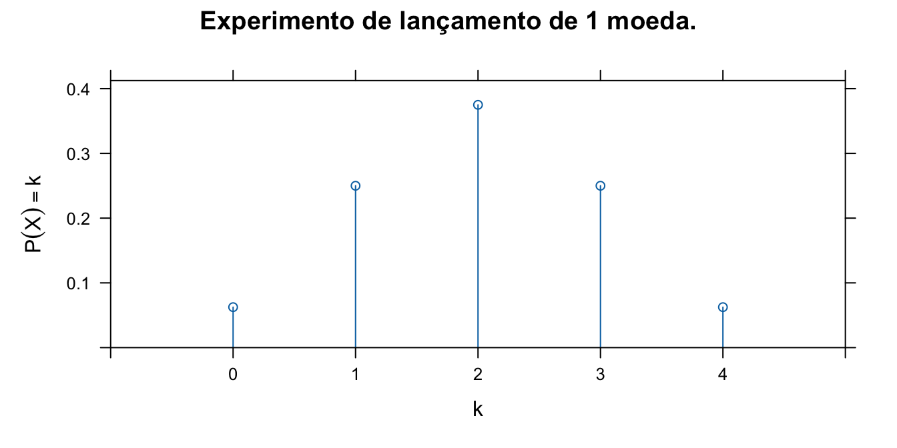
Binomial e Normal
- Resultado de um experimento de lançamento de uma moeda:
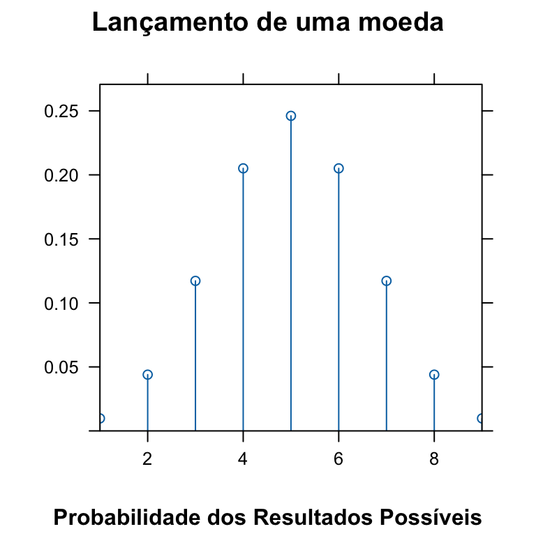
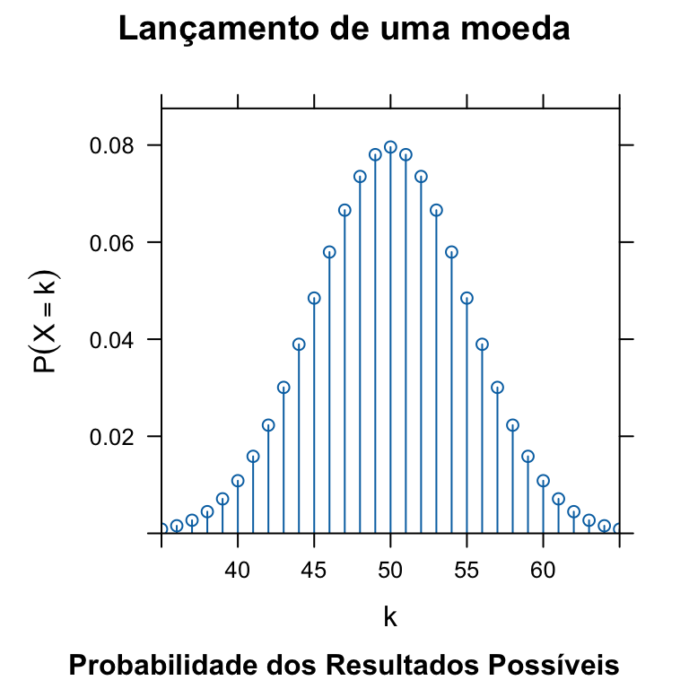
- A distribuição binomial, no infinito, tende para uma forma de sino, quando \(p=1/2\)!
Distribuição Normal Padrão
- Uma variável \(Z\) com Distribuição Normal Padrão é a var. que tem função densidade de probabilidade igual a:
- \[\phi(t) = f_Z(t) = \frac{1}{\sqrt{2\pi}}e^{-\frac{1}{2}t^2} \tag{4}\]
- É a exponencial de uma parábola, multiplicada pela constante \(1/\sqrt{2\pi}\)
- \[\phi(t) = f_Z(t) = \frac{1}{\sqrt{2\pi}}e^{-\frac{1}{2}t^2} \tag{4}\]
- Por que multiplicar por \(1/\sqrt{2\pi}\)?
- \(\int_{-\infty}^{\infty} e^{-\frac{1}{2}t^2}\, \mathrm{d}t = \sqrt{2\pi}\)
- \(\int_{-\infty}^{\infty} \frac{1}{\sqrt{2\pi}} e^{-\frac{1}{2}t^2}\, \mathrm{d}t = 1\)
- Toda função densidade de probabilidade deve somar 1!
- A distribuição Normal Padrão tem média zero e desvio-padrão igual a 1,0
- Refere-se a ela como: \(\mathcal N(0, 1)\)
Distribuição Normal Padrão
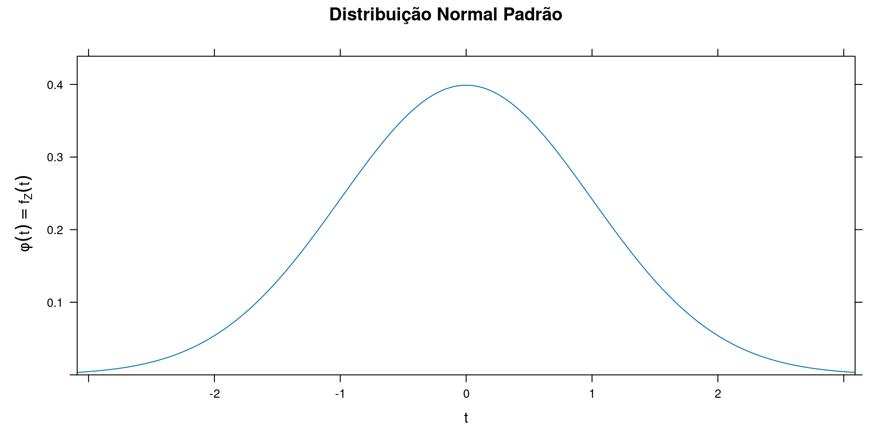
Figura 4: Distribuição Normal Padrão.
Um pouco de história
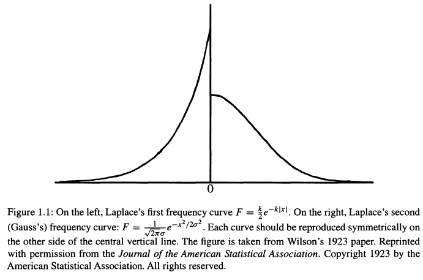
Leis dos erros de Laplace
Um pouco de história
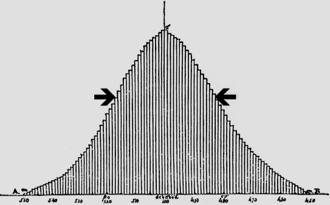
Aproximação Normal da Binomial
Um pouco de história
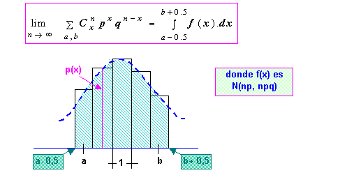
Aproximação Normal da Binomial (De Moivre, 1733)
Transformações lineares de v.a.
- Pode-se efetuar uma transformação de uma var. aleatória \(X\) assim:
- \[Y = h(Z) = aZ + b\]
- Estas transformações são chamadas de lineares
- Quando \(Z\) é uma var. discreta:
- \[p_Y(y) = p_Z(h^{-1}(Y)) = p_Z\left (\frac{Y-b}{a} \right )\]
- Quando \(Z\) é uma var. contínua:
- \[f_Y(y) = f_Z(g(y))\cdot \left | \frac{\mathrm d g(y)}{\mathrm d y}\right | = f_Z(g(y))\cdot |g'(y)| \tag{5}\]
- \(g(Y) = h^{-1}(Y)\)
- \(|g'(y)|\) é o Jacobiano da transformação!
- \[f_Y(y) = f_Z(g(y))\cdot \left | \frac{\mathrm d g(y)}{\mathrm d y}\right | = f_Z(g(y))\cdot |g'(y)| \tag{5}\]
- \[Y = h(Z) = aZ + b\]
Jacobiano de uma transformação linear
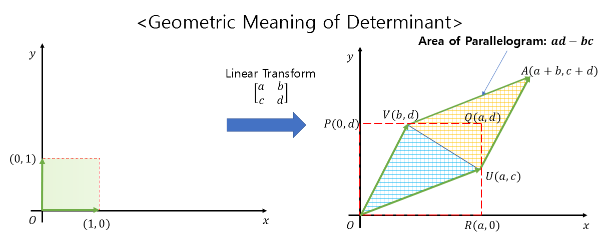
Jacobiano
- Mantem-se o paralelismo. A área é modificada por uma constante (\(\det J\))
Jacobiano de uma transformação linear
Distribuição Normal
- A partir da Normal Padrão, \(\mathcal N(0,1)\), é possível obter qualquer outra distribuição normal, \(\mathcal N(\mu, \sigma^2)\))!
- Basta fazer:
- \(Y = h(Z) = \sigma_Y Z + \mu_Y\)
- \(g(Y) = h^{-1}(Y) = \frac{Y-\mu_Y}{\sigma_Y}\)
- \(|g'(Y)| = |1/\sigma_Y|\)
- Basta fazer:
- Como fica a equação da normal genérica:
- \(f_Y(t) = f_Z \left (\frac{t - \mu_Y}{\sigma_Y}\right )\cdot | \frac{1}{\sigma_Y}|\)
- \(f_Y(t) = \frac{1}{\sqrt{2\pi}} e^{-\frac{(t-\mu_Y)^2}{2\sigma_Y^2}}\cdot | \frac{1}{\sigma_Y} |\)
- \(f_Y(t) = \frac{1}{\sigma_Y\sqrt{2\pi}} e^{-\frac{(t-\mu_Y)^2}{2\sigma_Y^2}}\)
Distribuição Normal
\[f(t) = \frac{1}{\sigma\sqrt{2\pi}} e^{-\frac{(t-\mu)^2}{2\sigma^2}},\, \text{para }-\infty<t<\infty \tag{6}\]
Nos referiremos a uma var. aleatória \(X\) com distribuição normal genérica como a da Equação 6 assim:
- \(X \sim \mathcal N(\mu, \sigma^2)\)
Percebam:
- \(\mu\) é um parâmetro que muda a posição da distribuição!
- \(\sigma\) é um parâmetro que muda a escala da distribuição!
Distribuição Normal
- O contrário também é verdadeiro:
- É possível obter a Normal Padrão a partir de uma distribuição normal qualquer!
- Basta fazer: \[Z = \frac{Y - \mu_Y}{\sigma_Y}\]
- Exemplo:
- Se \(Y \sim \mathcal N(100, 10^2)\)
- A quantos desvios-padrões de distância se encontra o valor 125? Qual a probabilidade de ocorrência de valores iguais ou maiores do que ele?
- \[Z = (125 - 100)/10 =2,5\]
- o desvio se encontra a 2,5DP de distância da média
- \[Z = (125 - 100)/10 =2,5\]
- A quantos desvios-padrões de distância se encontra o valor 125? Qual a probabilidade de ocorrência de valores iguais ou maiores do que ele?
- Se \(Y \sim \mathcal N(100, 10^2)\)
Distribuição Normal
- Probabilidade de ocorrências de valores iguais ou maiores:
- Tabela de Escores-Z!
- \(\mathbb P(Z \geq 2,5) = 1 - 0,99379 = 0,00621 = 0,62\%\)
- Tabela de Escores-Z!
- No R:
Distribuição Normal
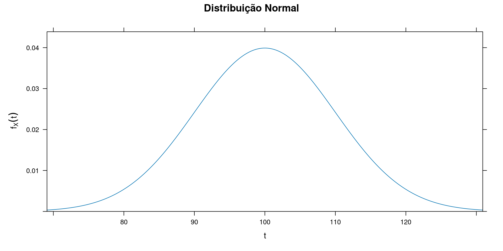
Figura 5: Distribuição Normal \(\mathcal N(100, 10^2)\) (\(\mu = 100,\, \sigma = 10\)).
Equivalência
Se uma variável aleatória \(\mathbf X\) que armazena as temperaturas médias diárias de uma determinada localidade, em ºF, de forma que \(\mathbf X \sim \mathcal N(95, 9^2)\)
Então uma variável \(\mathbf Y\) que é a transformação linear de \(\mathbf X\) conforme a Equação 7:
- \[Y = \frac{X - 32}{9/5} \tag{7}\]
- Deverá representar as mesmas probabilidades do fenômeno físico, porém numa escala diferente (no caso, a escala Celsius)!
Na escala Celsius, a variável apresentará distribuição normal, porém com média 35ºC e desvio-padrão igual 5,0 ºC!
- Ou seja, \(\mathbf Y \sim \mathcal N(35, 5^2)\)
Equivalência
\(\mathbf X \sim \mathcal N(95, 9^2)\)
A dois desvios-padrões de distância da média da variável \(\mathbf X\) está a temperatura \(95 + 2\cdot9 = 113 ^{\circ}\text{F}\)
\(\mathbf Y \sim \mathcal N(35, 5^2)\)
A dois desvios-padrões de distância da média da variável \(\mathbf Y\) encontra-se a temperatura \(35+2\cdot 5 = 45 ^{\circ}\text{C}\)
\(^{\circ}\text{C} = \frac{113-32}{9/5} = 45\)
A prob. de que a temp. média diária nessa localidade seja maior do que 45ºC
- É igual à prob. de que a temp. média diária nesse local seja maior do que 113ºF!
- Que é também a prob. de que a variável \(\mathbf Z \sim \mathcal N(0,1)\) seja maior do que 2,0:
Extendendo para outras dimensões
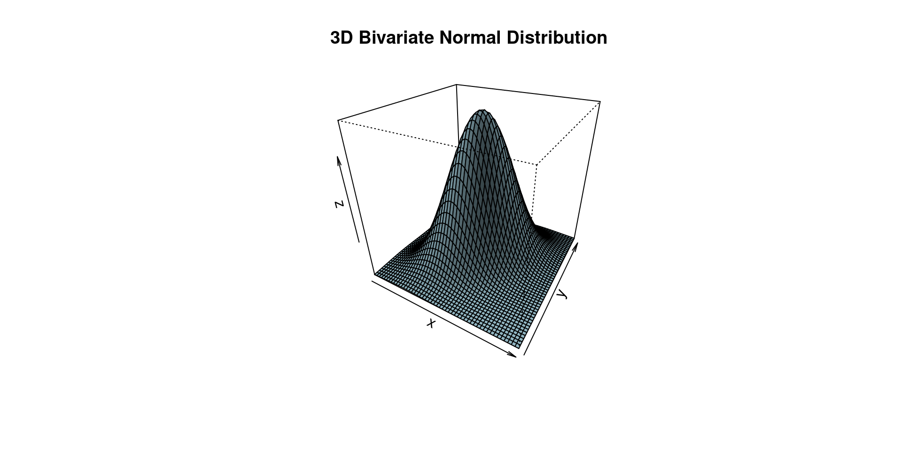
- São duas v.a.: \(\bf X \sim \mathcal N (\mu_x, \sigma^2_x) \text{ e } \bf Y \sim N (\mu_y, \sigma^2_y)\)
- Um parâmetro, \(\rho\), controla o grau de associação ou correlação entre \(\bf X\) e \(\bf Y\).
Extendendo para outras dimensões
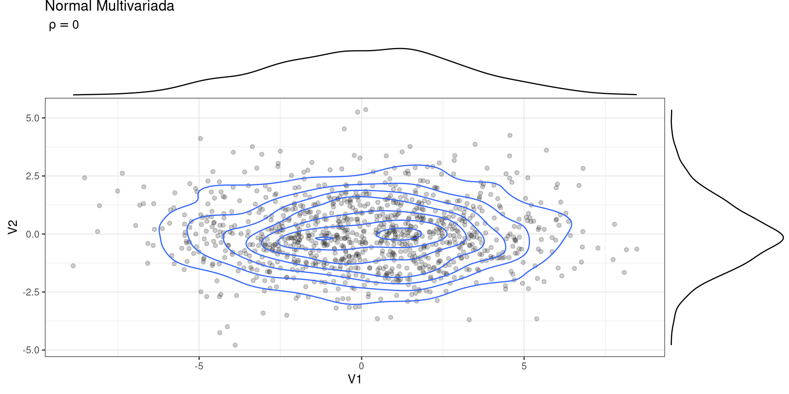
Extendendo para outras dimensões

Extendendo para outras dimensões
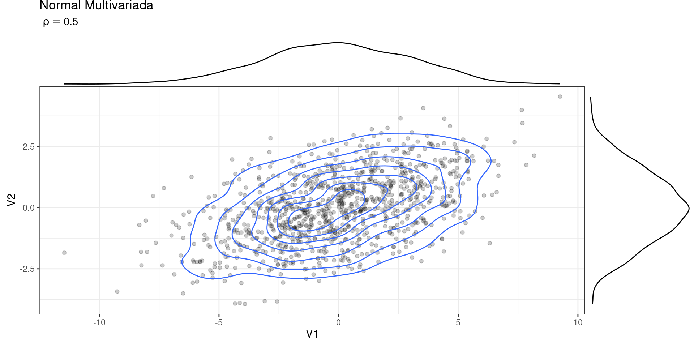
- A reta de regressão é o lugar geométrico das tangentes verticais das elipses
Aparte: Galton e a primeira regressão
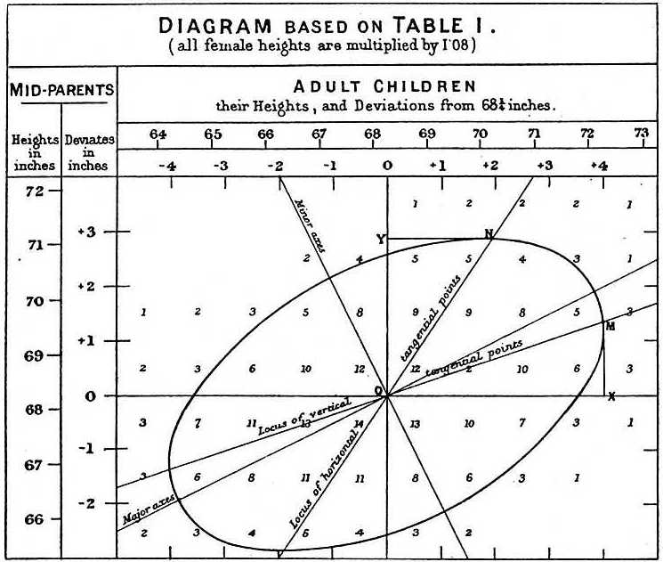
Aparte: Galton e a primeira regressão (2)
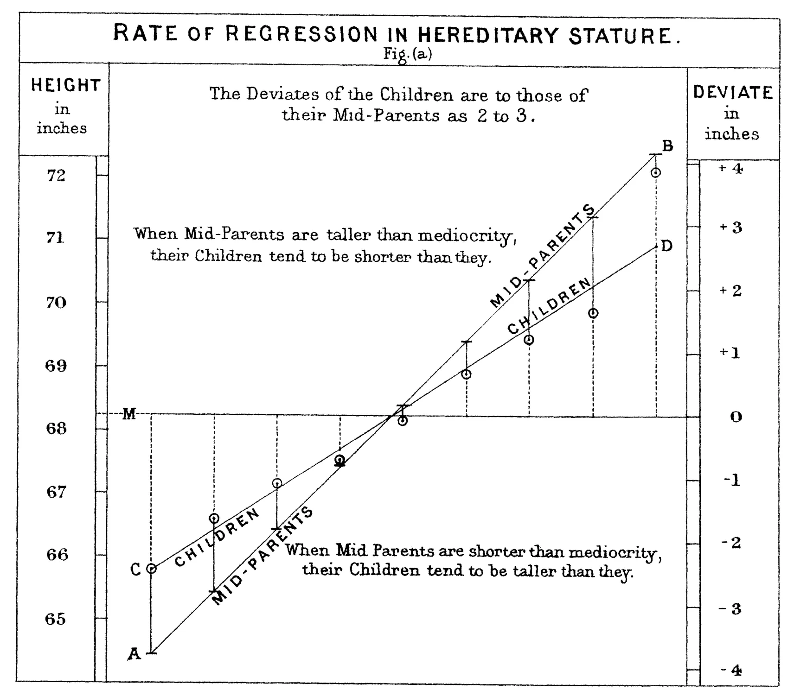
Extendendo para outras dimensões

- No limite (\(\rho = 1\)), o modelo se degenera para um modelo determinístico.
Regressão Linear Ordinária
Regressão Linear Simples
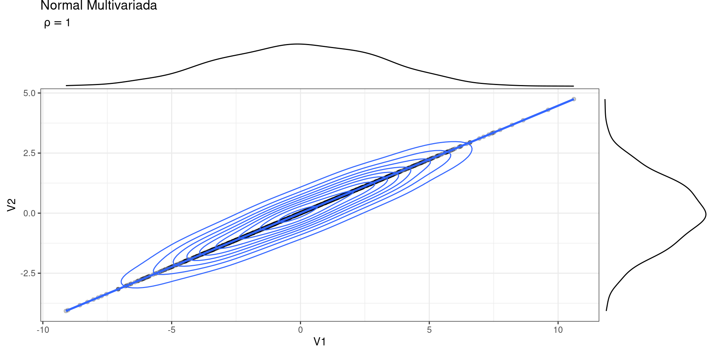
Regressão Linear Simples

Regressão Linear Simples
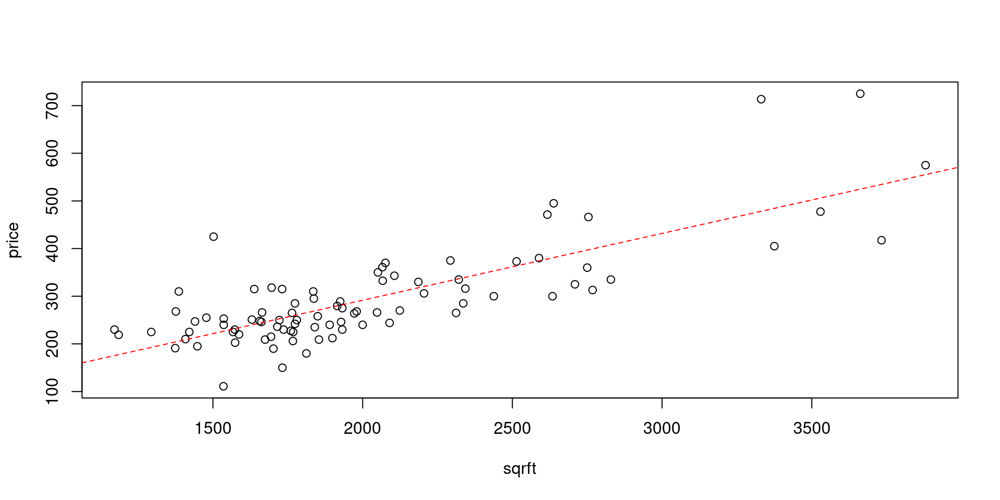
Regressão Linear Simples: interpretação
Call:
lm(formula = price ~ I(sqrft * 0.092903), data = hprice1)
Residuals:
Min 1Q Median 3Q Max
-117.112 -36.348 -6.503 31.701 235.253
Coefficients:
Estimate Std. Error t value Pr(>|t|)
(Intercept) 11.2041 24.7426 0.453 0.652
I(sqrft * 0.092903) 1.5092 0.1272 11.866 <2e-16 ***
---
Signif. codes: 0 '***' 0.001 '**' 0.01 '*' 0.05 '.' 0.1 ' ' 1
Residual standard error: 63.62 on 86 degrees of freedom
Multiple R-squared: 0.6208, Adjusted R-squared: 0.6164
F-statistic: 140.8 on 1 and 86 DF, p-value: < 2.2e-16- Para cada metro quadrado adicional, o preço dos imóveis aumenta US$ 1.500,00.
Regressão Linear Simples: interpretação
Call:
lm(formula = price ~ I(sqrft * 0.092903 - 100), data = hprice1)
Residuals:
Min 1Q Median 3Q Max
-117.112 -36.348 -6.503 31.701 235.253
Coefficients:
Estimate Std. Error t value Pr(>|t|)
(Intercept) 162.1260 12.9870 12.48 <2e-16 ***
I(sqrft * 0.092903 - 100) 1.5092 0.1272 11.87 <2e-16 ***
---
Signif. codes: 0 '***' 0.001 '**' 0.01 '*' 0.05 '.' 0.1 ' ' 1
Residual standard error: 63.62 on 86 degrees of freedom
Multiple R-squared: 0.6208, Adjusted R-squared: 0.6164
F-statistic: 140.8 on 1 and 86 DF, p-value: < 2.2e-16- Uma casa com 100 \(m^2\) vale, em média, US$ 162.000,00.
Regressão Linear Múltipla
- Na regressão linear simples:
- \[y = \alpha + \beta x + \varepsilon \tag{8}\]
- \(\varepsilon \sim \mathcal N(0, \sigma_e^2)\)
- Na regressão linear múltipla:
- \[y = \alpha + \beta_1 x_1 + \beta_2 x_2 + \ldots + \beta_k x_k + \varepsilon \tag{9}\]
- \(\varepsilon \sim \mathcal N(0, \sigma_e^2)\)
Regressão Linear Múltipla
Call:
lm(formula = price ~ I(sqrft * 0.092903 - 100) + I(bdrms - 1),
data = hprice1)
Residuals:
Min 1Q Median 3Q Max
-127.627 -42.876 -7.051 32.589 229.003
Coefficients:
Estimate Std. Error t value Pr(>|t|)
(Intercept) 134.1308 21.6979 6.182 2.12e-08 ***
I(sqrft * 0.092903 - 100) 1.3825 0.1488 9.291 1.39e-14 ***
I(bdrms - 1) 15.1982 9.4835 1.603 0.113
---
Signif. codes: 0 '***' 0.001 '**' 0.01 '*' 0.05 '.' 0.1 ' ' 1
Residual standard error: 63.04 on 85 degrees of freedom
Multiple R-squared: 0.6319, Adjusted R-squared: 0.6233
F-statistic: 72.96 on 2 and 85 DF, p-value: < 2.2e-16- Interpretação:
- uma casa com um quarto e 100 \(m^2\) vale, em média, US$ 134.000,00;
- cada \(m^2\) adicional aumenta o valor da casa em US$ 1.382,50;
- cada quarto adicional aumenta o valor da casa em US$ 15.200,00.
Regressão Linear Múltipla
Call:
lm(formula = price ~ I(sqrft * 0.092903 - 100) + I(bdrms - 1) +
I(lotsize), data = hprice1)
Residuals:
Min 1Q Median 3Q Max
-120.026 -38.530 -6.555 32.323 209.376
Coefficients:
Estimate Std. Error t value Pr(>|t|)
(Intercept) 1.242e+02 2.082e+01 5.967 5.55e-08 ***
I(sqrft * 0.092903 - 100) 1.322e+00 1.425e-01 9.275 1.66e-14 ***
I(bdrms - 1) 1.385e+01 9.010e+00 1.537 0.12795
I(lotsize) 2.068e-03 6.421e-04 3.220 0.00182 **
---
Signif. codes: 0 '***' 0.001 '**' 0.01 '*' 0.05 '.' 0.1 ' ' 1
Residual standard error: 59.83 on 84 degrees of freedom
Multiple R-squared: 0.6724, Adjusted R-squared: 0.6607
F-statistic: 57.46 on 3 and 84 DF, p-value: < 2.2e-16Estimação de parâmetros
Máxima Verossimilhança
- A estimação dos parâmetros de uma distribuição normal pode ser feita por máxima verossimilhança.
within the framework of a statistical model, a particular set of data supports one statistical hypothesis better than another if the likelihood of the first hypothesis, [given] the data, exceeds the likelihood of the second hypothesis (Edwards 1974, 30).
\[L(\mu, \sigma^2 | x_1, x_2, \ldots, x_n) = \prod_{i=1}^n \frac{1}{\sqrt{2\pi\sigma^2}}e^{-(x_i-\mu)^2/2\sigma^2} \tag{10}\]
Procura-se \(\mu\) e \(\sigma^2\) que maximizam a Equação 10.
Máxima Verossimilhança
- É mais fácil computacionalmente maximizar \(\ell(\mu, \sigma^2 | x_1, x_2, \ldots, x_n))\):
- \[\ell(\mu, \sigma^2 | x_1, x_2, \ldots, x_n) = \ln (L(\mu, \sigma^2 | x_1, x_2, \ldots, x_n)) \tag{11}\]
- Então:
- \[ \begin{align*} \ell(\mu, \sigma^2 | x_1, x_2, \ldots, x_n) &= -\frac{n}{2} \ln(2\pi) - n \ln(\pi) - \frac{(x_1 - \mu)^2}{2\sigma^2} - \\ &\frac{(x_2 - \mu)^2}{2\sigma^2} - \ldots - \frac{(x_n - \mu)^2}{2\sigma^2} \end{align*} \]
Máxima Verossimilhança
- O processo de maximização consiste em fazer:
- \[\frac{\partial \ell(\mu, \sigma^2 | x_1, x_2, \ldots, x_n)}{\partial \mu} = 0\]
- \[\hat \mu = \frac{(x_1 + \ldots + x_n)}{n}\]
- \[\frac{\partial \ell(\mu, \sigma^2 | x_1, x_2, \ldots, x_n)}{\partial \sigma} = 0\]
- \[\hat \sigma = \sqrt{\frac{(x_1 - \mu)^2 + \ldots + (x_n - \mu)^2}{n}}\]
Em suma, a média amostral é o estimador de máxima verossimilhança para \(\mu\) e o desvio-padrão amostral é o estimador de máxima verossimilhança para o parâmetro \(\sigma\).
Ver link para uma explicação detalhada
Estimação na regressão linear
- A regressão linear consiste na minimização dos resíduos quadráticos:
- \[\min \sum_{i=1}^n \epsilon_i^2 \tag{12}\]
- O resíduo é a diferença entre o valor observado e o valor estimado pelo modelo:
- Ou seja, pode-se escrever a Equação 12 como:
- \[\beta_{OLS} = \]
- Ou seja, pode-se escrever a Equação 12 como:
Lei dos Grandes Números (LGN)
Está na raiz do nascimento da Teoria das Probabilidades a Lei Fraca dos Grandes Números!
Teorema 3.1 (A Lei Fraca dos Grandes Números). Seja \(X_1, \ldots , X_n\) variáveis aleatórias independentes e identicamente distribuídas com valor esperado \(\mathbb E(X_i) = \mu\) e variância finita \(\mathbb V(X_i) < \infty\), para \(i = 1, \ldots, n\). A média amostral é definida como:
\[\overline X_n = \frac{1}{n}\sum_{i=1}^n = X_i\]
Então, para qualquer número positivo \(\epsilon > 0\), a probabilidade que a diferença entre a média amostral e o valor esperado \(\mu\) seja menor do que \(\epsilon\) vai se aproximar de 1, à medida que o tamanho da amostra se aproxima de infinito:
\[\lim_{n \rightarrow \infty} = \mathbb P (|\overline X_n - \mu| < \epsilon) = 1\]
Distribuição de Cauchy Padrão
- A distribuição de Cauchy Padrão tem função densidade de probabilidade (fdp):
- \[f_X(t) = \frac{1}{\pi}\cdot \left ( \frac{1}{1+t^2}\right) \tag{13}\]
- A distribuição de Cauchy genérica tem fdp:
- \[f_X(t) = \frac{1}{\pi\gamma}\left ( \frac{1}{1+\left (\frac{t-t_0}{\gamma} \right )^2}\right) \tag{14}\]
- A Equação 14 é obtida através da transformação linear da Equação 13:
- \(t_0\) é um parâmetro de posição
- \(\gamma\) é um parâmetro de escala
- A Equação 14 é obtida através da transformação linear da Equação 13:
- \[f_X(t) = \frac{1}{\pi\gamma}\left ( \frac{1}{1+\left (\frac{t-t_0}{\gamma} \right )^2}\right) \tag{14}\]
- A distribuição de Cauchy não apresenta média nem variância finitas!
Distribuição de Cauchy
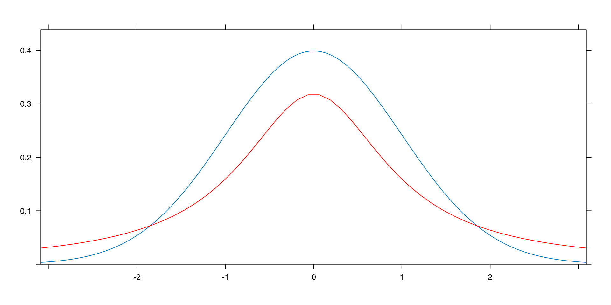
Distr. de Cauchy Padrão (em vermelho) vs. Distr. Normal Padrão (em azul)
- A distribuição de Cauchy possui caudas mais pesadas do que a distribuição normal!
LGN
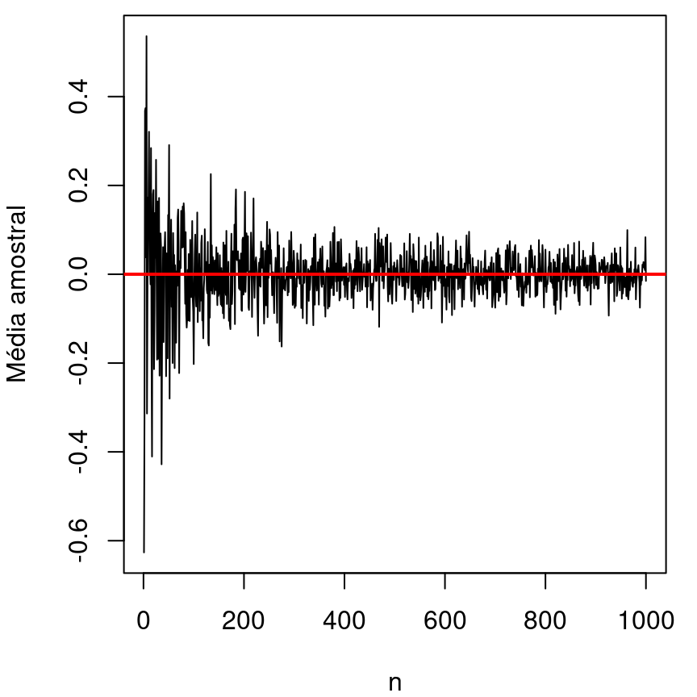
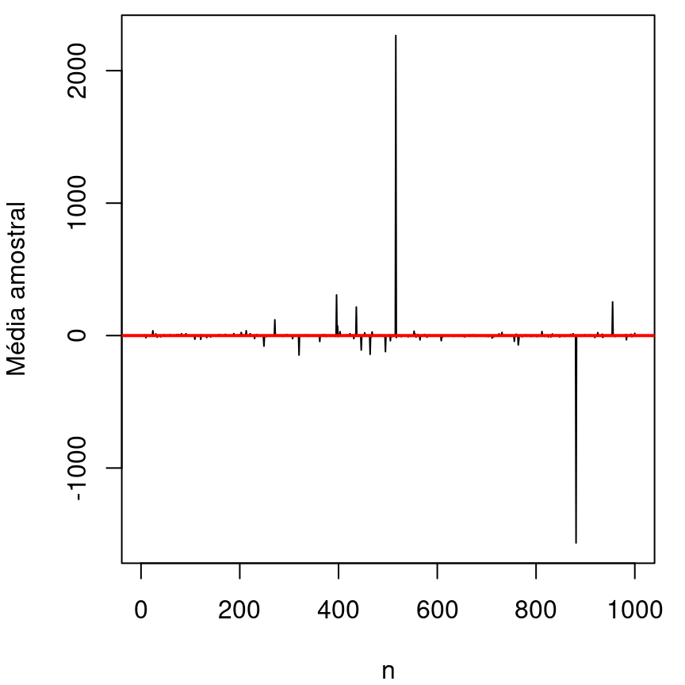
Como estimar o parâmetro da Cauchy?
- Se a média amostral não é consistente para estimar o parâmetro de posição da Distribuição de Cauchy, como fazê-lo?
- A questão é que alguns poucos dados extremos da amostra desestabilizam a média amostral!
- Precisa-se, portanto, de um estimador robusto a outliers!
- É natural pensar na mediana!
- Porém, há outras possibilidades, como a média aparada!
LGN - mediana
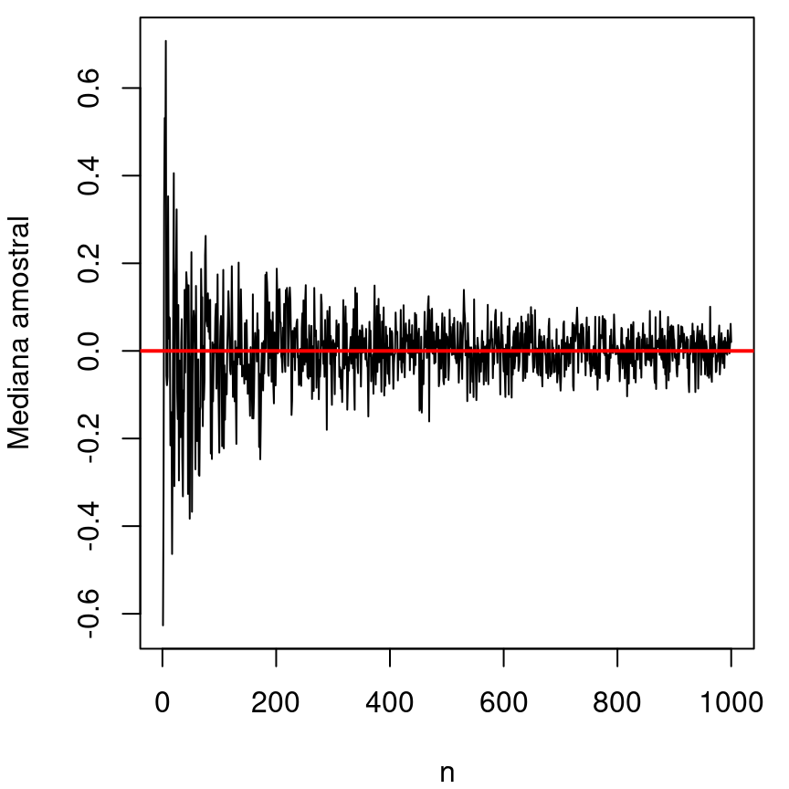
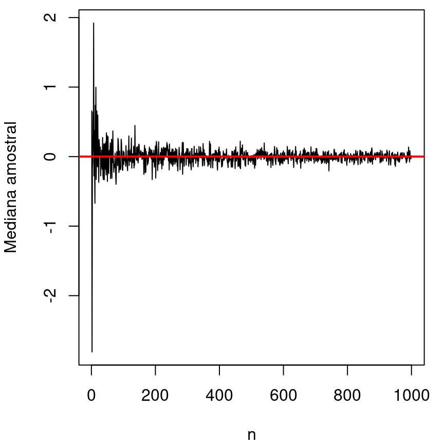
Transformações não-lineares de v.a.
- Também podemos utilizar funções \(h(X)\) não-lineares para transformar variáveis aleatórias
- Por exemplo: \(Y = h(Z) = Z^2\)
- A variável \(Y\) obtida com a elevação ao quadrado de uma var. com dist. normal padrão tem distribuição dita \(\chi^2_{(1)}\)
- \[f_Y(t) = \begin{cases} \frac{1}{\sqrt{2\pi t}} e^{-\frac{t}{2}} & \text { se } t> 0 \\ 0 & \text{ se } t \leq 0 \end{cases}\]
- A variável \(Y\) obtida com a elevação ao quadrado de uma var. com dist. normal padrão tem distribuição dita \(\chi^2_{(1)}\)
- Por exemplo: \(Y = h(Z) = Z^2\)
- Uma medida da dispersão amostral, denominada variância é:
- \[\mathbb V(X) = \frac{1}{n}\sum_{i = 1}^{n} (X_i - \mu)^2 \tag{15}\]
- É fácil notar que \(Y = \mathbb V(X) \sim \chi^2_{(1)}\)
- \[\mathbb V(X) = \frac{1}{n}\sum_{i = 1}^{n} (X_i - \mu)^2 \tag{15}\]
Distribuição \(\chi^2_{(1)}\)
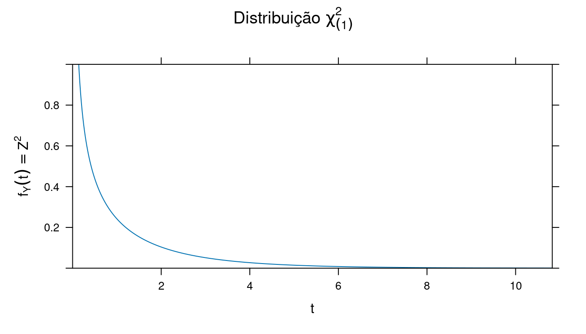
Figura 8: Distribuição \(\chi^2\) com 1 grau de liberdade.
- \(\mathbb E(Y) = 1\) (variância da distribuição normal padrão é igual a 1!)
Transformações não-lineares
- Seja \(Z\) uma variável com distribuição normal padrão
- Seja \(\mu\) e \(\sigma>0\) dois números reais
- Então \[X = e^{\mu + \sigma Z} \tag{16}\]
- tem distribuição dita lognormal!
- Então \[X = e^{\mu + \sigma Z} \tag{16}\]
- Seja \(\mu\) e \(\sigma>0\) dois números reais
- Inversamente, se \(X\) é uma variável com distribuição lognormal
- Então \(Y = \ln(X)\)
- É uma variável com distribuição normal!
- Então \(Y = \ln(X)\)
- A distribuição lognormal tem fdp:
- \[f_X(t) = \frac{1}{t\sigma\sqrt{2\pi}}\exp\left (-\frac{(\ln(t) - \mu)^2}{2\sigma^2} \right) \tag{17}\]
Distribuição Lognormal
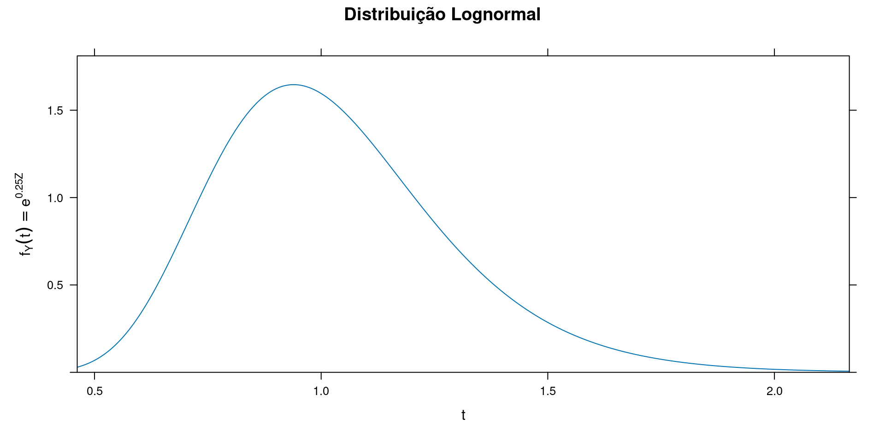
Figura 9: Distribuição Lognormal
Distribuição Lognormal

Figura 10: Distribuição Lognormal (\(\mu^* = 5000\))
Distribuição Lognormal
Estimação de parâmetros
- Os parãmetros da distribuição lognormal podem ser assim estimados:
- \[\hat \mu = \frac{1}{n} \sum_{i=1}^n \ln(X_i)\]
- \[\hat \sigma^2 = \frac{1}{n} \sum_{i=1}^n (\ln(X_i)-\hat\mu)^2\]
Aplicações
Casas nos EUA
year age agesq nbh cbd inst linst price rooms area land baths dist
1 1978 48 2304 4 3000 1000 6.9078 60000 7 1660 4578 1 10700
2 1978 83 6889 4 4000 1000 6.9078 40000 6 2612 8370 2 11000
3 1978 58 3364 4 4000 1000 6.9078 34000 6 1144 5000 1 11500
4 1978 11 121 4 4000 1000 6.9078 63900 5 1136 10000 1 11900
5 1978 48 2304 4 4000 2000 7.6009 44000 5 1868 10000 1 12100
6 1978 78 6084 4 3000 2000 7.6009 46000 6 1780 9500 3 10000
7 1978 22 484 4 4000 2000 7.6009 56000 6 1700 10878 2 11700
8 1978 78 6084 4 3000 2000 7.6009 38500 6 1556 3870 2 10200
9 1978 42 1764 4 3000 2000 7.6009 60500 8 1642 7000 2 10500
10 1978 41 1681 4 3000 2000 7.6009 55000 5 1443 7950 2 11000
ldist lprice y81 larea lland linstsq
1 9.277999 11.00210 0 7.414573 8.429017 47.71770
2 9.305651 10.59663 0 7.867871 9.032409 47.71770
3 9.350102 10.43412 0 7.042286 8.517193 47.71770
4 9.384294 11.06507 0 7.035269 9.210340 47.71770
5 9.400961 10.69195 0 7.532624 9.210340 57.77368
6 9.210340 10.73640 0 7.484369 9.159047 57.77368
7 9.367344 10.93311 0 7.438384 9.294497 57.77368
8 9.230143 10.55841 0 7.349874 8.261010 57.77368
9 9.259131 11.01040 0 7.403670 8.853665 57.77368
10 9.305651 10.91509 0 7.274479 8.980927 57.77368Análise Exploratória
Diagramas de Caixa
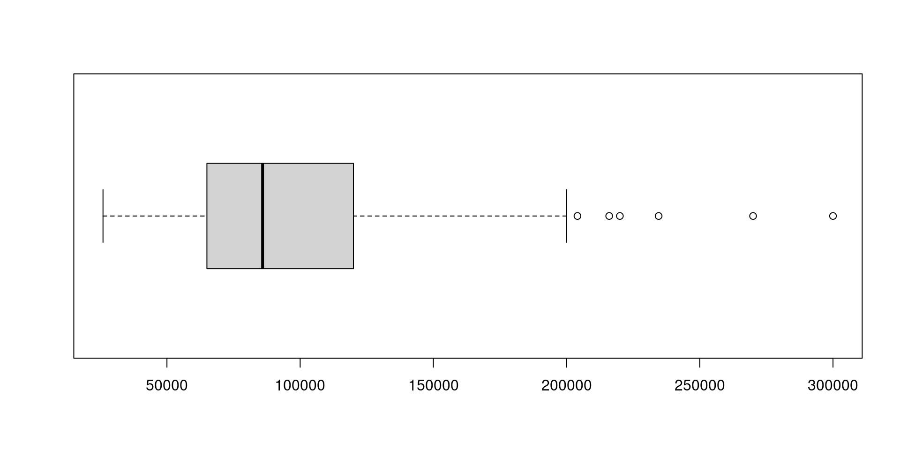
Análise Exploratória
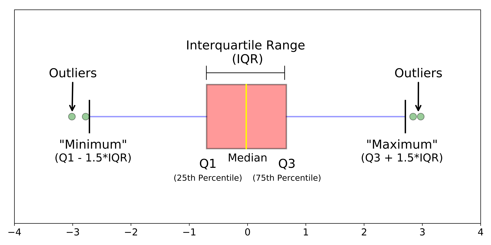
Como é construído um Diagrama de Caixa
Os cinco números de Tukey
- O famoso estatístico John Tukey, em sua obra clássica, Exploratory Data Analysis, sugeriu os diagramas de caixa para ilustrar rapidamente os cinco números que considerava sugestivos da amostra:
- Valor Mínimo
- Primeiro Quartil
- Segundo Quartil ou Mediana
- Terceiro Quartil
- Valor Máximo
O que são Quartis?
- Para uma variável aleatória \(X = X_1, X_2, \ldots, X_n\), o k-ésimo quartil, \(Q_k\), é definido como o valor que separa a amostra em dois subconjuntos tal que (Moors 1988, 25):
- \[\mathbb P(X < Q_K) \leq k/4, \, \mathbb P(X > Q_K) \leq 1 - k/4, \, k = 1, 2, 3\]
- Também pode-se dizer, mas é menos comum, que \(Q_0 = \min(X)\) e \(Q_4 = \max(X)\)
O que são Percentis?
Analogamente aos quartis, os percentis são:
- \[\mathbb P(X < P_K) \leq k/100, \, \mathbb P(X > P_K) \leq 1 - k/100 \, k = 1, 2, \ldots, 99\]
Também pode-se dizer que \(P_0 = \min(X)\) e \(P_{100} = \max(X)\)
Também é possível definir Tercis, Quintis, e assim por diante!
- Tercis:
- \[\mathbb P(X < T_K) \leq k/3, \, \mathbb P(X > T_K) \leq 1 - k/3, \, k = 1, 2\]
- Tercis:
Histograma

Histograma

Histograma

Histograma

Análises de Regressão
Análise com preços totais
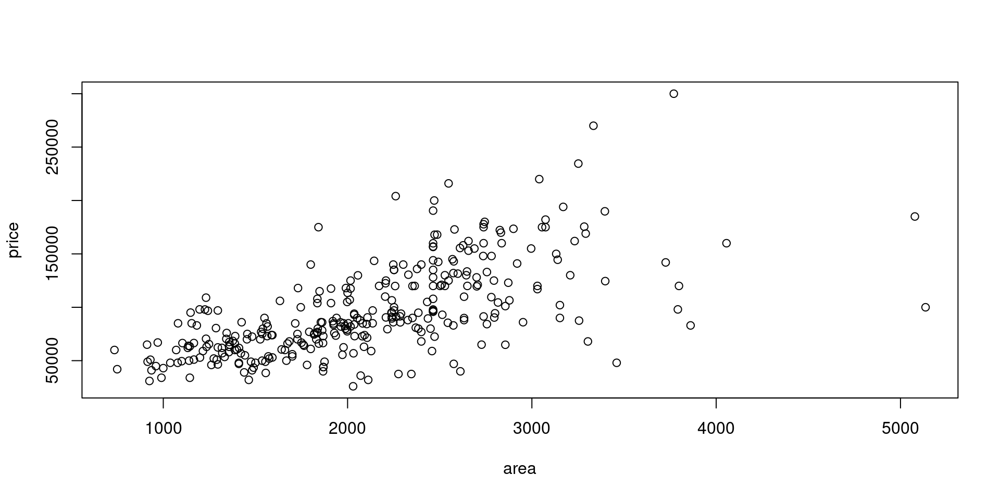
Análise com preços totais

- \(R^2 = 0,41\)
Análise com preços unitários
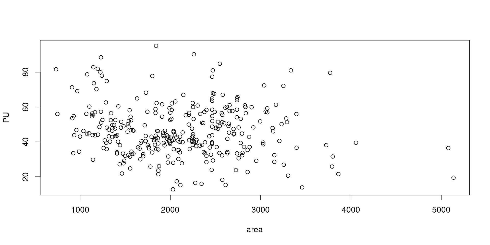
Análise com preços unitários

- \(R^2 = 0,015\)
Análise com preços unitários

Análise com preços unitários
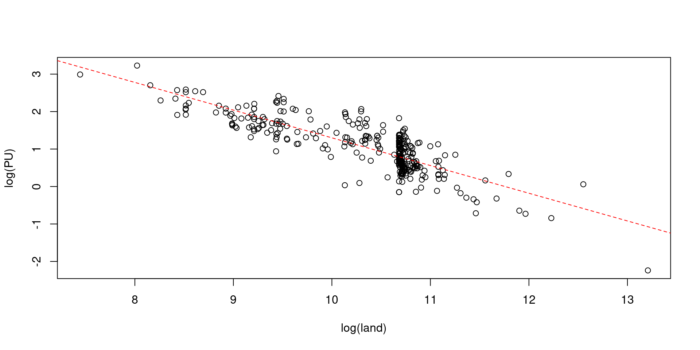
Estatísticas dos coeficientes
Call:
lm(formula = log(PU) ~ log(land), data = hprice3)
Residuals:
Min 1Q Median 3Q Max
-1.16788 -0.26037 -0.03899 0.28270 1.02910
Coefficients:
Estimate Std. Error t value Pr(>|t|)
(Intercept) 8.6955 0.2780 31.28 <2e-16 ***
log(land) -0.7396 0.0269 -27.49 <2e-16 ***
---
Signif. codes: 0 '***' 0.001 '**' 0.01 '*' 0.05 '.' 0.1 ' ' 1
Residual standard error: 0.3858 on 319 degrees of freedom
Multiple R-squared: 0.7032, Adjusted R-squared: 0.7023
F-statistic: 755.8 on 1 and 319 DF, p-value: < 2.2e-16- Com apenas uma variável, 70% de poder de explicação!
Soma de efeitos
Call:
lm(formula = log(PU) ~ log(land) + log(area), data = hprice3)
Residuals:
Min 1Q Median 3Q Max
-1.20114 -0.18050 -0.02436 0.23762 0.75368
Coefficients:
Estimate Std. Error t value Pr(>|t|)
(Intercept) 4.48864 0.40045 11.21 <2e-16 ***
log(land) -0.85706 0.02378 -36.03 <2e-16 ***
log(area) 0.71302 0.05597 12.74 <2e-16 ***
---
Signif. codes: 0 '***' 0.001 '**' 0.01 '*' 0.05 '.' 0.1 ' ' 1
Residual standard error: 0.3144 on 318 degrees of freedom
Multiple R-squared: 0.8035, Adjusted R-squared: 0.8023
F-statistic: 650.1 on 2 and 318 DF, p-value: < 2.2e-16- A segunda variável acrescenta 10 p.p. em poder de explicação!
Soma de efeitos (2)
Call:
lm(formula = log(PU) ~ log(land) + log(area) + age, data = hprice3)
Residuals:
Min 1Q Median 3Q Max
-1.27363 -0.18649 -0.01256 0.20098 0.78489
Coefficients:
Estimate Std. Error t value Pr(>|t|)
(Intercept) 5.0248911 0.3768540 13.334 < 2e-16 ***
log(land) -0.9112903 0.0231436 -39.375 < 2e-16 ***
log(area) 0.7252967 0.0517281 14.021 < 2e-16 ***
age -0.0039366 0.0005278 -7.458 8.46e-13 ***
---
Signif. codes: 0 '***' 0.001 '**' 0.01 '*' 0.05 '.' 0.1 ' ' 1
Residual standard error: 0.2905 on 317 degrees of freedom
Multiple R-squared: 0.8328, Adjusted R-squared: 0.8312
F-statistic: 526.4 on 3 and 317 DF, p-value: < 2.2e-16Referências
Edwards, A. W. F. 1974. “The History of Likelihood”. International Statistical Review / Revue Internationale de Statistique 42 (1): 9–15. https://doi.org/10.2307/1402681.
Feller, William. 1968. An Introduction to Probability Theory and Its Applications. 3º ed. Nova Iorque, EUA.: John Wiley & Sons, Inc.
Kolmogorov, Andrey N. 1950. Foundations of the Theory of Probability. NY, EUA: Chelsea Publishing Company.
Matloff, Norman Saul. 2009. From Algorithms to Z-Scores: Probabilistic and Statistical Modeling in Computer Science. Davis, California: Orange Grove Books. http://heather.cs.ucdavis.edu/~matloff/132/PLN/probstatbook/ProbStatBook.pdf.